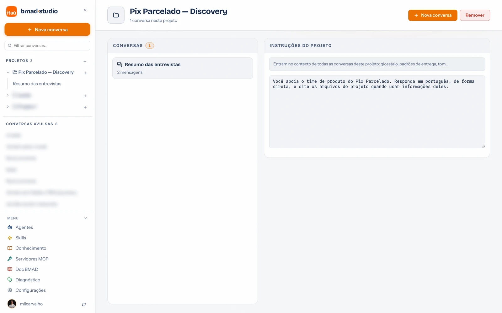

Guia de uso · 03
Projetos
Um projeto agrupa três coisas: conversas, arquivos (numa pasta real do seu disco) e instruções permanentes que entram no contexto de todas as conversas dele. É o jeito de trabalhar num assunto por semanas sem repetir contexto.
Criar um projeto
- Na sidebar, clique no + ao lado do título Projetos (ou escolha PROJETO na tela inicial).
- Dê um nome — ele vira também o nome da pasta no disco (ex.: "Pix Parcelado — Discovery" →
pix-parcelado-discovery/). - Pronto: o projeto aparece na sidebar; o + ao lado dele cria conversas dentro.
A tela do projeto
Clicar no nome do projeto na sidebar abre a visão geral:

- Conversas — todas as conversas do projeto; clique para abrir.
- Instruções do projeto — texto livre que entra no contexto de todas as conversas dele.
- Painel BMAD — instala o BMAD Method e mostra os artefatos do projeto (detalhes).
- Remover — a pasta inteira vai para a lixeira interna (
.trashna raiz dos projetos), de onde dá para recuperar manualmente.
O que escrever nas instruções
A regra prática: tudo que você se pega repetindo em cada conversa. Exemplos que funcionam bem:
- Contexto do produto: "Você apoia o time do Pix Parcelado. Público: PF 25–45, correntistas digitais."
- Glossário: siglas e nomes internos que o modelo não conhece.
- Padrões de entrega: "Documentos em português, com sumário executivo no topo, no formato dos templates em
templates/." - Limites: "Nunca invente números; quando não houver dado, diga que não há."
Instruções valem para o projeto; para um papel reutilizável
entre projetos (ex.: "PM de Pagamentos"), prefira um agente.
Onde ficam no disco
projects/
pix-parcelado-discovery/
brief.md pesquisa/ dados/ # seus arquivos — o assistente trabalha aqui
_bmad-output/ # artefatos gerados pelos workflows BMAD
.aiportal/ # metadados do portal (sessões, skills do projeto)
A pasta é sua: dá para abrir no Finder/Explorer ("Mostrar na pasta local" no painel de arquivos), versionar com git, fazer backup copiando. A raiz é configurável em Configurações.